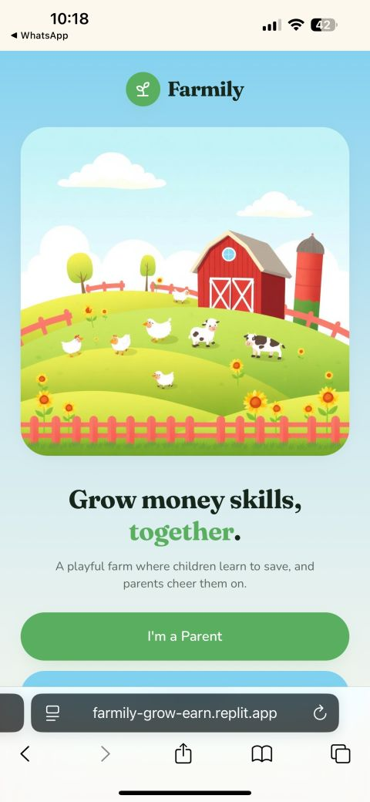

Farmily
Farmily is a gamified financial education platform designed to help families build healthy financial habits.
Project Features:
- Allowance management
- Options to keep, save, or contribute part of the allowance
- Rewards system
- Interactive farm events
- Gamified financial learning
- Savings goals
